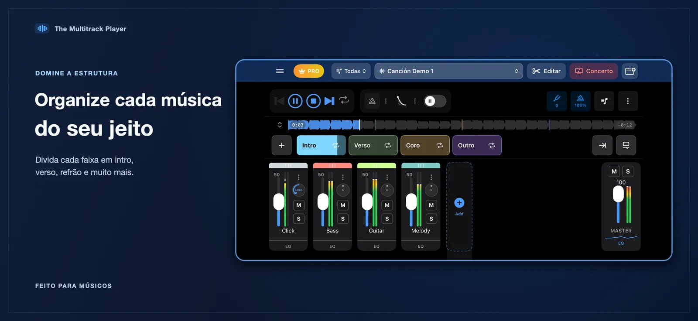
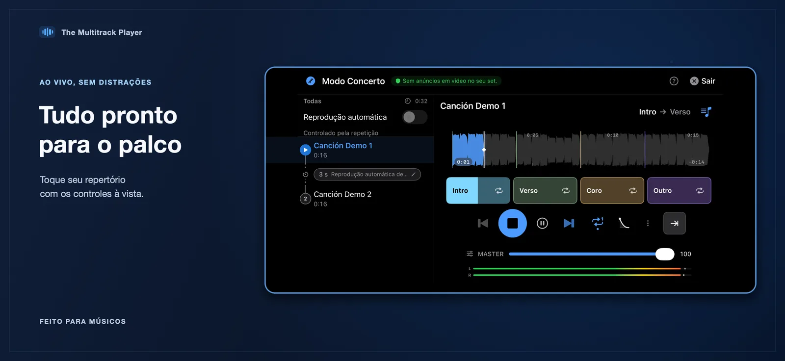
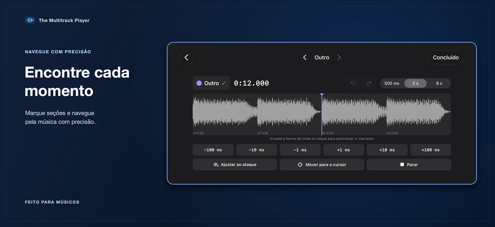
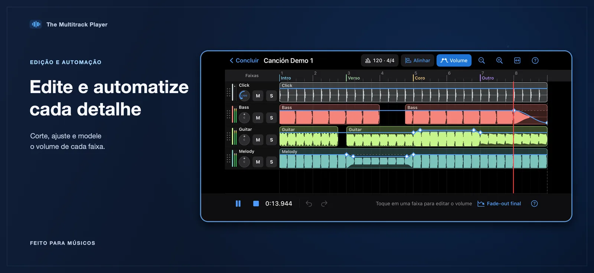
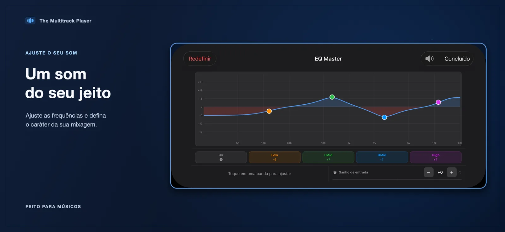
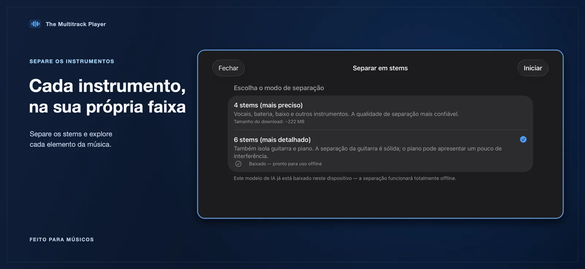
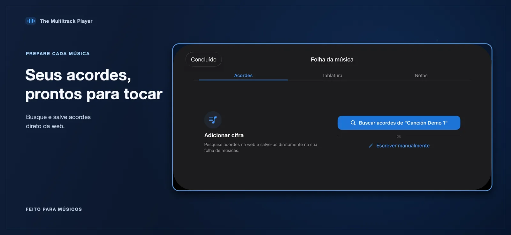
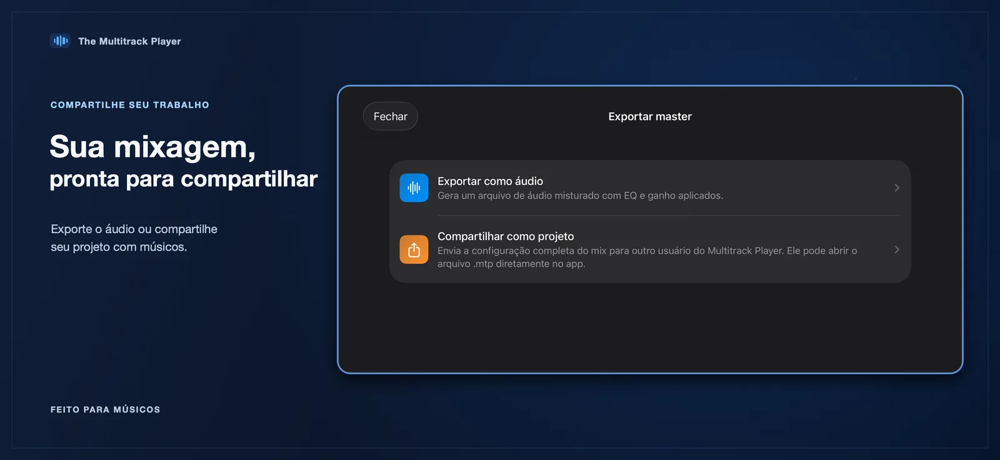

Navegue pelos trechos da música
Organize o arranjo em trechos identificados e vá direto à parte que a apresentação precisa.
The Multitrack Player
Tenha cada faixa sob seu controle. Monte seu repertório, ajuste a mixagem e navegue pelos trechos das músicas com controles de reprodução ao vivo feitos para músicos.
Para iPhone e iPad · Requer iOS 17 ou posterior

Um espaço de trabalho para cada parte
Prepare suas músicas, encontre o trecho necessário e faça ajustes sem perder de vista o arranjo completo.

Organize o arranjo em trechos identificados e vá direto à parte que a apresentação precisa.

Use a forma de onda e os controles finos para definir os limites dos trechos e refinar as transições.

Ajuste volume, panorâmica, mudo, solo e tom de cada faixa; controle também andamento, compasso e metrônomo. Quando disponível, direcione faixas para saídas separadas de uma interface de áudio conectada.

Refine uma faixa com o equalizador integrado e mantenha a mixagem organizada enquanto o arranjo muda.

Quando habilitada, escolha separar em quatro ou seis stems. Depois de baixar o modelo, é possível usar a separação sem internet.

Consulte recursos de cifras e tenha as informações da música disponíveis junto do seu projeto multipista.

Gere um arquivo de áudio com a mixagem ou compartilhe o projeto .mtp para continuar trabalhando nele.
Conforme os recursos habilitados no app, seu fluxo de trabalho também pode incluir gravação de áudio, automação do volume das faixas, edição de áudio e roteamento multicanal para uma interface conectada. O app também oferece tutoriais em vídeo.
Importe o áudio pelo app Arquivos, organize as faixas em um projeto e use os mesmos controles da música para preparar e tocar seu repertório. Os arquivos de áudio e projetos importados ficam armazenados localmente no seu dispositivo.
Importe arquivos de áudio pelo app Arquivos, incluindo formatos comuns compatíveis com o iOS.
Organize os trechos, equilibre as faixas e deixe as deixas necessárias ao alcance.
Use o modo concerto, a fila de músicas e os controles individuais durante a reprodução.
The Multitrack Player
Conheça os controles de reprodução e apresentação multipista para iPhone e iPad.
Ver na App Store